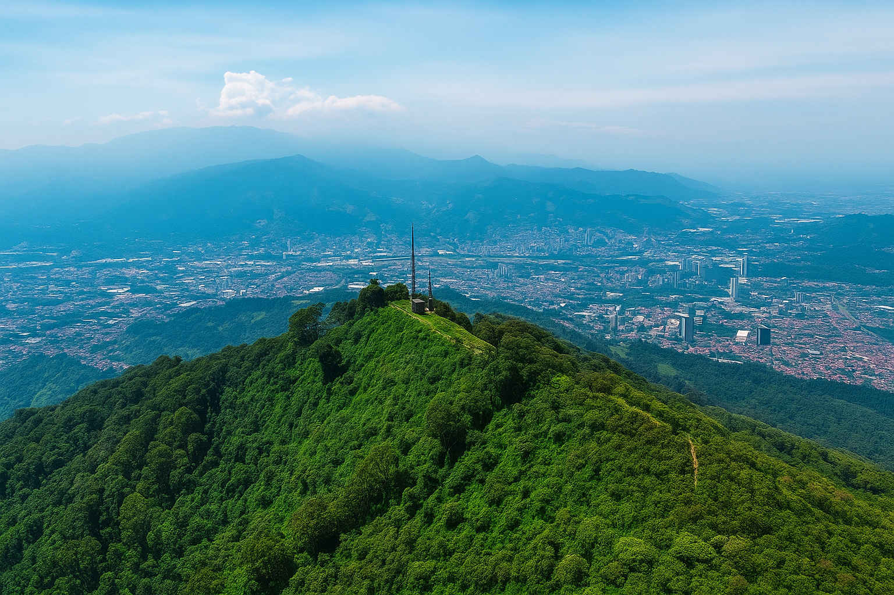
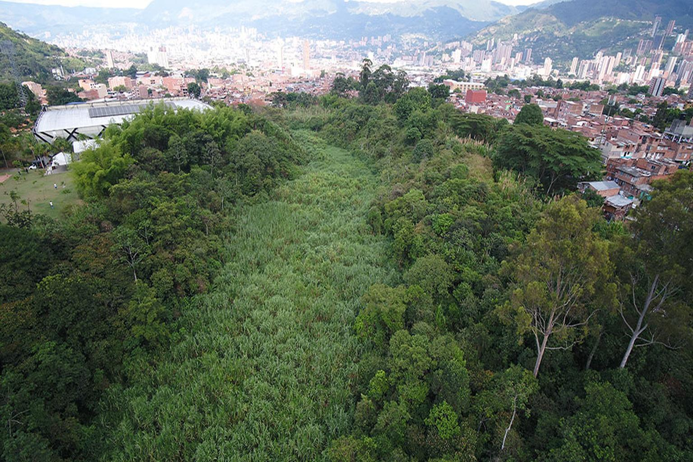
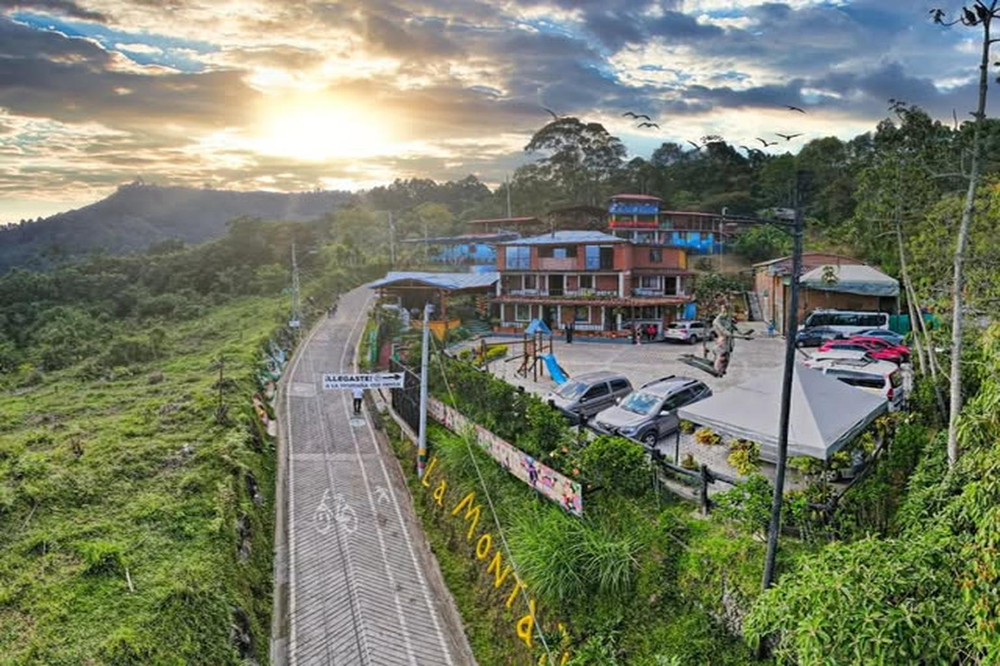
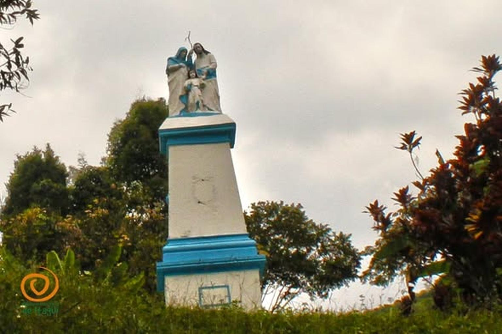
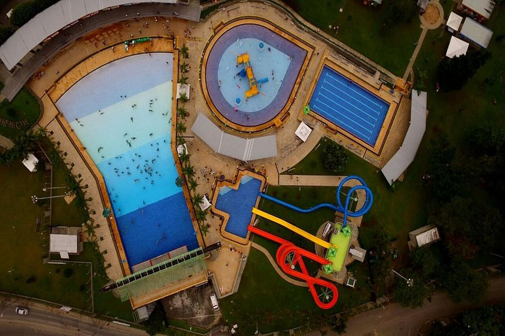

Reserva Natural Pico El Manzanillo
Un área protegida con una enorme diversidad de flora y fauna, ideal para senderismo, caminatas ecológicas y contemplación de la naturaleza.

Humedal Ditaires
Zona natural urbana donde pueden observarse aves, mamíferos y plantas nativas en un entorno tranquilo y protegido.

La Montaña que Piensa
Un mirador con espectaculares vistas de Itagüí y Medellín, además de arte urbano y espacios culturales.

Cerro de los Tres Dulces Nombres
Un sitio perfecto para apreciar la ciudad desde otra perspectiva y disfrutar del entorno natural.

Acuaparque Ditaires
Un parque acuático ideal para disfrutar en familia, con piscinas, toboganes y amplias zonas verdes para descansar.